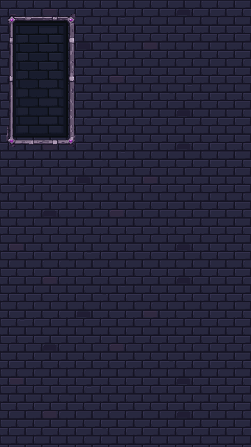
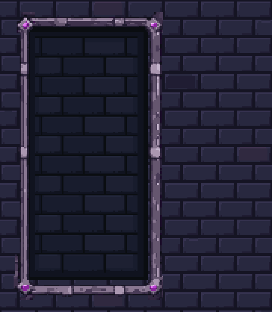
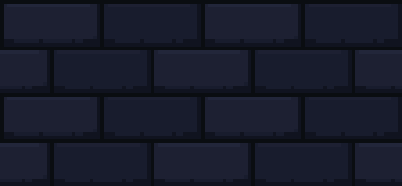

STAGE 02 COMPLETE · REVIEW CANDIDATE · STOPPED BEFORE STAGE 03
A separate, quieter portrait recess
New PixelLab material, refined as native pixels in LibreSprite. The blue-charcoal inset sits behind the unchanged portrait rails, with broad stones and stepped inner shadows. This is the isolated art preview; production Dungeon gameplay and UI are unchanged.
Stage report · Measured checks · Approved Stage 01 review · Draft PR #203
Actual Unity preview
Native 360×640 Game View. Toggle the captures to inspect the separate backing and the mask. The magenta probe is diagnostic only and was never saved into the scene.

New recess — actual Unity capture
Portrait region at 3×; same source pixels.PixelLab source → native cleanup → readability
Rattlebones appears only on the external inspection sheet. His actual 64×64 golden pixels are unchanged and have not been imported into this art-only scene.
Native outputs

56×26 center repeat, assembled 2×2 and shown at 4×.Verified
Unity test: 1 passed, 0 failed. Required Unity validator passed. Native cels, exported PNGs and actual 1×/3× Unity assembly match exactly. The oversized masked fill changed zero pixels outside the opening; disabling its mask produced visible spill. Approved wall and existing frame files are byte-identical.
One PixelLab job: 5 equivalents. Cumulative 10/35; remaining account balance 1044.20. No merge. Stage 03 awaits your instruction.